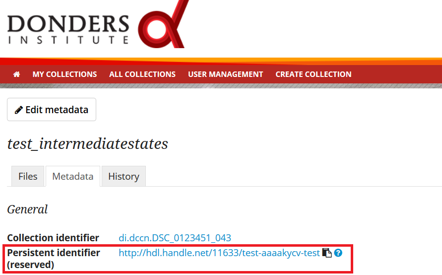

Publish data
Should I always share the data of my publication?
Yes! Our funding agencies, such as NWO and EU, require this either explicitly in the grant on basis of which you carried out the work, or implicitly in their general regulations. The Radboud University has made open access part of its policy. The Donders Institute requires sharing the data.
There might be reasons why you do not want to share your data immediately, e.g. if you are still working on follow up publications based on the same data. In those cases you should share the data under an embargo of a certain time.
There might be reasons why you do not want to share your data with everyone, e.g. if it represents financial value. In those cases you should make a custom data use agreement under which the data is to be shared (which might e.g. contain a clause about paying for the data).
There might be reasons related to the privacy of your subjects and where the data cannot be de-identified. In that case you still might be able to share processed results at the group level that allow other researchers to validate the claims in your paper. Note that unprocessed imaging and MEG/EEG data can be shared after it has been de-identified and under the appropriate Data Use Agreement (DUA).
Can I share my data if they belong to an ongoing project?
When a research project is still ongoing (i.e. the Data Acquisition Collection is still open), and the researchers want to write a paper using the data collected until present, then they can create a Data Sharing Collection (DSC) in which the data that were used in the publication are shared. You should document in the DSC that these shared data are part of a larger project, of which only a part is shared in the current DSC.
What data should I share in a Data Sharing Collection (DSC)?
You should share all data that is of potential value to other researchers: the DSC should contain the relevant information (1) to reproduce the published results, and (2) to extend on these published results.
However, you should only share data that has been de-identified and that cannot be traced back to the individual. Keep in mind that, in all cases, sharing human data requires that the participants have signed an informed consent form that allows the data to be shared.
Raw photos, videos or audio files should not be shared in a DSC. (In exceptional cases, sharing is allowed, provided that the participant gave explicit consent for public sharing of this material).
How should I prepare my datasets before public sharing?
Make sure your human subjects data are properly anonymized: Anonymization of datasets is required before publication to protect the privacy of research participants. Anonymization must be done according to the guidelines below:
Remove all direct identifiers
Remove indirect identifiers that are not essential for re-using the data
Remove indirect identifiers that have a high 'disclosure risk', e.g., unusual characteristics or a combination of unusual findings (e.g. world leader with orange skin, or very rare disease and nationality and age)
Include as few indirect identifiers as possible
Reduce precision of indirect identifiers (e.g., use year of birth or age in years)
Direct identifiers (not allowed)
Indirect identifiers (limit, or reduce precision)
Name and/or initials
Gender
E-mail address
Year of birth
Home address
Place of birth
Telephone number / contact info
Body measures (weight, height)
Unique ID numbers (BSN, SONA-id)
Socio-economic data (work, income, education)
Video, photo or audio data (voice)
Information about individuals mental / physical well-being
Data containing participant's facial features (MRI: deface)
Geographic information
Date of birth
Sensitive data (ethnicity, race, sexual orientation and risky behavior)
Other dates that could be identifying for participant: visit, scan..
Information that may stigmatize a community (e.g., membership of religious or political org.)
Pseudonyms (only allowed if key-file has been disposed)
How should I organize the data in the repository (DAC/RDC/DSC)?
Organize your collections in a standard way (such as BIDS), because will make it much easier to share the data at a later point in time. Below is one example from the BIDS website. See more examples here.

For all types of data we recommend that you add a text document (txt, pdf or Microsoft Word) that describes the organization of the data over the files and directories.
What is a Data Use Agreement (DUA)?
The DUA specifies the conditions under which data in a DSC is shared, e.g. to give attribution. The DUA may also include details on specific limitations on the reuse of the data. As manager or contributor to the DSC you specify under which DUA the data is to be shared. When the external researcher agrees with the collection’s DUA, he/she will be automatically added as a viewer to it, which gives him/her read access.
The repository supports several DUAs. Please use RU-DI-HD-1.0 for collections that include potentially identifiable data from individual human subjects. If a dataset has more specific requirements for data sharing (e.g. due to sensitivity of data or requirements of funders or collaborating partners), it is required to make a custom DUA. For further help, please send an email to datasupport@donders.ru.nl.
What is a persistent identifier?
A persistent identifier is a long-lasting reference to an online document or file. The Donders Repository persistent identifiers are realized by the handle system. See more on the Wikipedia page: https://en.wikipedia.org/wiki/Persistent_identifier
Can I use the persistent identifiers generated by the Donders Repository for my publication?
As a prerequisite for publication, several journals now request a persistent identifier of the shared data, which they publish in the footnote of the article. Researchers from the Donders Institute can use the persistent identifier of the published Data Sharing Collection (DSC) for that purpose.
A published DSC's persistent identifier has the same status as the persistent identifiers that are typically used to refer to published journal articles, such as the digital object identifiers (DOIs). A persistent identifier allows for direct access to a digital object, even if its URL has changed.
When sending the DSC's persistent identifier to the journal, in the email, you should add some additional information pertaining to the conditions under which the shared data can be accessed. Here is a template email that you can use for that purpose:
The shared data for paper XXX-YYY can be found via the following persistent identifier: http://hdl.handle.net/MyPersistentID (replace this string by the string that you copy and paste from the collection metadata page).
If applicable, see this page: Prior to accessing and downloading the shared data, users have to create an account. It is possible to use an institutional account, an ORCID account, or a social ID from Google+, Facebook, Twitter, LinkedIn or Microsoft. After authentication, users must accept the Data Use Agreement (DUA), after which they are automatically authorised to download the shared data. The DUA specifies whether there are any restrictions on how the data may be used.
As an example of how to access shared data, one may follow the Digital Object Indentifier (doi) in the data availability segment of the footnote of this paper. Instructions for how to request access and to download shared data can be found at Access shared data.
The Radboud University and the Donders Institute for Brain, Cognition and Behaviour will keep these shared data available for at least 10 years.
Can I share my data without the need for the downloading user to register an account?
Yes, but it depends on the type of data you share, and the data use agreement you select, see this page. In general, access to potentially identifiable human data (e.g., MRI data) must be 'restricted' and requires authentication by the user, after which the user has to agree with the specified Data Use Agreement before access is allowed. This is required to protect the privacy of our research participants. Anonymous access to 100% anonymized data is allowed by selecting a general Data Use Agreement or license (that was not specifically designed for RU / DI).
Journals usually accept that data sets are shared only after registering / access request, if data sets include potentially identifiable human data (e.g. MRI). If the journal questions this, you should explain to the journal why access request, and logging in to the repository, is required to access the data. Here's a template paragraph that you can use for this purpose:
All data was acquired in accordance with the declaration of Helsinki, following informed consent of participants and in line with the requirements of the Ethics Committee. In line with requirements of the Ethics Committee and the Radboud University security officer, potentially identifying data (such as imaging data) can only be shared to identifable researchers, hence the requirement for registration and for requesting access. Neither authors nor data steward is involved in granting access to external researchers, this is only based on the complete registration of the researcher and follows a “click-through” procedure. We believe that this procedure is in line with your policy, while at the same time being as open and transparent as possible.
What if a 'published' Data Sharing Collection (DSC) contains incorrect information?
If a 'published' DSC contains incorrect and/or insufficient information, a collection manager may ask the research administrator to make it 'editable' again, allowing for changes to be made. If this DSC is modified and thereafter changed to 'published' again, then a second read-only copy is generated, with another unique persistent identifier.
Since the original collection is persistent, it will remain accessible as well. Therefore, carefully check all the files before changing a DSC to 'published'. See Publish DSC and share data.
How many publications can be linked to a Data Sharing Collection (DSC)?
A DSC can be linked to zero, one or multiple publications. The first situation (no publication) occurs when a data set is considered useful for external researchers in their future studies. The second situation (one publication) typically occurs when a data set is used in a publication, and the DSC is shared around the same time that the paper becomes available on the publisher’s website. The third situation (more publications) typically occurs when a DSC gets reused in other publications following the paper that was published together with DSC.
I just published my DSC by clicking the "switch to published" button; why does my persistent identifier not work?
The actual publication of a DSC takes time, as a copy of the collection content is created once you click the "switch to published" button on the web portal. Depending on the size of the collection content, it may take a few minutes or hours before your DSC is actually accessible via the persistent identifier.